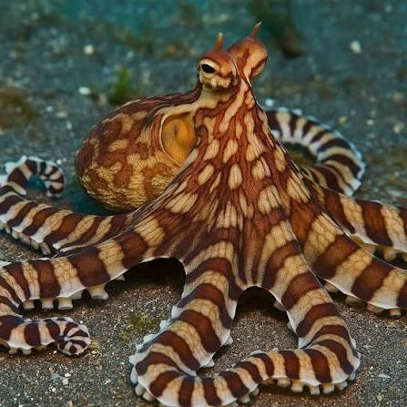

PULPO MIMO / IMITADOR
Thaumoctopus mimicus

Usa el camuflaje y el mimetismo para comunicarse con otros individuos, engañar a sus enemigos y evitar ser encontrado; también puede imitar a otras especies.
- Nombre científico: Thaumoctopus mimicus
- Camuflaje y mimetismo: Se comunica con individuos de su especie, engaña enemigos, evita ser encontrado e imita a otras especies.
- Hábitat: Aguas saladas de océanos y mares de todo el mundo.
- Sentido: Visión.
- Uso: Caza y supervivencia.
- Función: Ocultamiento y pretender.